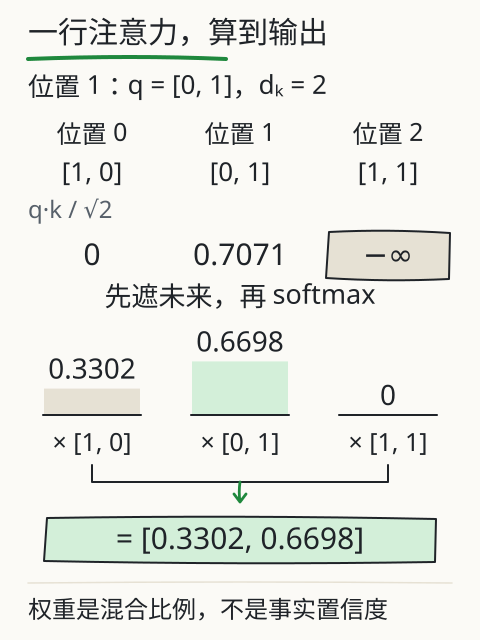

C07 注意力到底计算了什么
用手遮住“我把苹果切开”的后半句，只露出“我把”。站在“把”这个位置，你能看到“苹果”吗？训练时整句都在材料里，模型会不会提前偷看后面的答案？本章把一次注意力拆成四步：投影出 Q/K/V、算匹配分数、遮住未来、按权重汇总。每一步都能手算。
先修桥：矩阵形状与加权平均
先复习两个动作。
矩阵乘法：一个 m×n 矩阵乘一个 n×p 矩阵，得到 m×p 矩阵。结果第 i 行第 j 列，是左矩阵第 i 行与右矩阵第 j 列对应相乘再相加。例如：
[1 0] [1 0] [1 0]
[0 1] × [0 1] = [0 1]
[1 1] [1 1]
这是 3×2 乘 2×2，得到 3×2；单位矩阵不改变输入。
加权平均：两个数 10 和 20，权重 0.25 与 0.75，结果是 0.25×10 + 0.75×20 = 17.5。权重相加为 1，结果落在两个数之间。注意力最后一步就是这种加权，只是每个“数”换成一行向量。
Q、K、V 各做什么
同一行输入表示，经过三组不同的学到的参数，得到三种用途：
- Q（查询）：当前位置想找什么。
- K（键）：每个位置能提供什么“匹配条件”。
- V（值）：每个位置实际要汇入的内容。
这不是三个会主动思考的角色，而是三组投影结果。用一个 3 个位置、每位置 2 维的例子：
X = [1 0] WQ = WK = WV = [1 0]
[0 1] [0 1]
[1 1]
取单位矩阵是为了让手算看得见：Q=K=V=X。真实模型的三组参数不同，形状也可能不同；本章只练计算关系。
站在第二个位置，算一行
位置编号从 0 开始。现在站在位置 1（输入 [0,1]），它只能看见位置 0 和 1，位置 2 是未来。
第一步，算分数：当前位置的 Q 与各可见位置的 K 求点积，再除以 √d_k。这里 d_k=2，√2≈1.4142。
- 与位置 0：
q·k0 = 0×1 + 1×0 = 0 - 与位置 1：
q·k1 = 0×0 + 1×1 = 1 - 除以
√2：[0, 0.7071]
第二步，遮住未来：位置 2 的分数设为负无穷（计算中常写成很大的负数）。exp(-∞)=0，它在 softmax 里权重为 0。这样可见位置的权重和为 1，未来位置不贡献。
第三步，softmax：对 [0, 0.7071]：
exp(0)=1exp(0.7071)≈2.0281- 总和
3.0281 - 权重
[0.3302, 0.6698]
第四步，加权汇总 V：可见 V 是 [1,0] 与 [0,1]：
输出 = 0.3302×[1,0] + 0.6698×[0,1] = [0.3302, 0.6698]
第一个分量只来自位置 0 的 V 第一维，第二个分量只来自位置 1 的 V 第二维。权重说明“这次混合各取多少”，不是“模型有多相信某句话”。

本例输出恰好等于两项权重，是因为 V 恰好为 [1,0] 与 [0,1]。如果只把 V 改成 [2,0] 与 [0,4]，保持 Q、K 不变，权重仍是 [0.3302,0.6698]，输出却变成约 [0.6605,2.6790]。权重决定取多少，V 决定取回什么；不要把“输出向量”与“注意力权重”混为一谈。
整张矩阵在算什么
把三个位置一起算，形状是这样：
X是 3×2，WQ是 2×2，Q是 3×2；K、V 同理。QKᵀ是 (3×2)·(2×3)=3×3，第 i 行第 j 列是位置 i 的 Q 与位置 j 的 K 的点积。- 除以
√d_k，再对每一行做 softmax；上三角（未来）已被遮住。 - 权重矩阵 3×3 乘 V（3×2），得到输出 3×2。
Kᵀ 只是把 K 的行列交换，好让 Q 的每一行与 K 的每一行逐一相乘。mask 在 softmax 之前生效；softmax 是按行做的，所以每一行的权重各自相加为 1。

改一个条件：动未来，输出会变吗
站在位置 1，把位置 2 的 V 从 [1,1] 改成 [100,-100]。先猜输出会不会变，再算：位置 2 的权重是 0，0×[100,-100]=[0,0]，所以输出仍是 [0.3302, 0.6698]。
再把位置 2 的 K 改得很大，分数仍然被 mask 成负无穷，权重仍是 0，输出不变。这两个测试检查的是因果边界：未来内容不能通过这一层影响当前位置。
如果站在位置 2（最后一个位置），未来为空，所有位置都可见；这时改位置 1 的 V 就会改变输出。边界不是“永远只能看两个位置”，而是“不能看自己后面”。
旧实验（X04 注意力）可以选位置、修改未来 V、对照修改前后的数值，并把一次计算分成“可见—分数—权重—汇总”几步。它使用人工小矩阵，省去投影计算，不是模型内部读数。
注意力的边界
一次注意力只是一层、一个头的局部汇总。真实模型还要：
- 用多组 Q/K/V 投影做多头，再拼接（C08）；
- 经过前馈层、残差连接与归一化；
- 加入位置信息，否则同一组词的不同顺序难以区分；
- 堆叠多层，并经过输出头得到词表分数。
注意力权重也不是完整的“思考记录”。权重高只说明这个头这次多取了一些 V，不能直接读成“模型认为这句话重要”或“这句话为真”。
失败对照
- 忘记缩放：分数随维度变大，softmax 过尖；
√d_k是常用的缩放。 - 先 softmax 再 mask：未来位置已经分到权重，再置零会破坏“每行和为 1”，必须先遮再归一化。
- mask 用 0 分：0 分不是“看不见”，它仍可能得到非零权重；要用负无穷或等价的加性掩码。
- 把权重当事实置信度：权重是混合系数，不是正确概率。
- 忽略形状：
QKᵀ的行是查询位置、列是被看位置；转置弄反，mask 方向也会反。
独立作业（容差 ±0.002）
- 取
q=[1,1]，可见k1=[1,0]、k2=[0,3]，d_k=2。算两个缩放后分数、softmax 权重。 - 对应
V1=[1,2]、V2=[3,0]，算加权汇总输出。 - 若把未来的
k3设为[9,9]、V3设为[5,5]，输出会不会变？说明理由。 X为 4×3，WQ、WK、WV均为 3×2：写出 Q、QKᵀ、权重矩阵、输出各自的形状。若只把WV换成 3×5，哪一步的形状会变？- 用自己的话说明：为什么“先 mask 再 softmax”与“先 softmax 再 mask”不等价。
核对过程在 C07 答案。
项目增量：注意力轨迹 v1
在 S2 项目里新增 attention-trace.md，选一个位置，记录：
位置 | 可见位置 | 原始分数 | 缩放后分数 | softmax 权重 | 各 V | 输出向量 | 未来改动是否影响
至少做一次“修改未来 V”的对照，并保留修改前后的数值。数据可以来自旧实验或手算；标明是人工矩阵，不写成模型内部读数。
来源与边界
本章沿用旧课 L04 模型怎样利用前文 的 Q/K/V、因果掩码与加权汇总，以及旧实验 X04 的计算方法。G31 保留可见范围示意；G52 专为本章单位投影例子计算，不混用旧实验矩阵。单位投影与 [0,0.7071] 这组数是课程为手算设计的，不是 DeepSeek、Kimi 或任何模型的内部 Q/K/V；真实模型的头数、维度、缩放方式和掩码实现要按架构与代码核对。